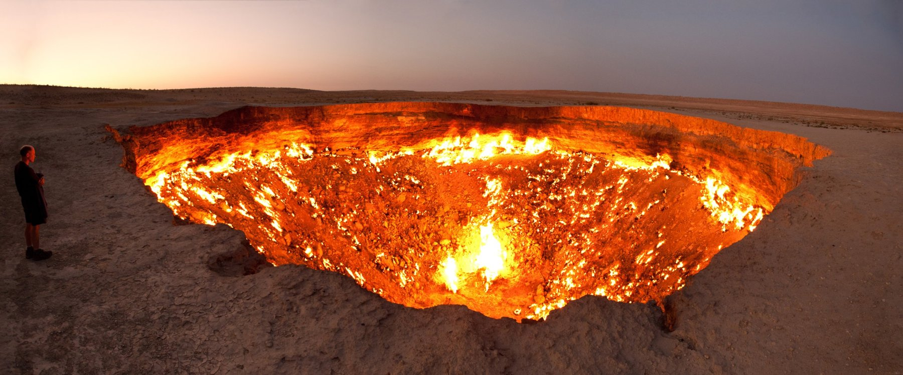

ECON 238 · Batsh!t Crazy Idea · Ryker Mirabella
Come get your gas, or I'll light it on fire.
Leak it, lose it: foreclosing on methane leaks to recover ~54 billion cubic meters of gas a year.
If you let your gas leak, you lose it. Someone else can capture it, and if nobody wants it, we set it on fire, because a burning leak is 8–30 times better for the climate than a silent one.

1 · The hook
The Gates of Hell
In 1971, Soviet scientists lit a gas crater in Turkmenistan's desert, expecting it to burn out in weeks. It has burned for 50+ years.
It looks like a disaster. It's the opposite: burning turns methane into CO₂, which traps far less heat. Meanwhile Turkmenistan is one of the world's worst leakers, and its damage comes from the leaks nobody lit. Now it's diverting the crater's gas to capture it.
Leaking: worst
Burning: 8–30× better
Using it: best
2 · The problem
124 million tonnes, and nobody owns it
Methane from fossil fuels, 2025 (IEA)
Inside the pipe, the gas belongs to the company. Once it escapes, it belongs to no one, so leaking costs the company nothing.
Fines become a price
Niger Delta companies cut flaring only ~10% since 2007, preferring to pay fines.
Selling the problem away
After Shell sold Nigeria's Oyigbo field, flaring rose ~15× while Shell reported zero routine flaring.
The real owners lose
On North Dakota's Fort Berthold Reservation, the tribe owns royalties on gas companies burn.
3 · Leak sizes
Not every leak is worth burning
The largest ~5% of leaks cause over half of all leakage.
Small → Leave
~75–85% of sites · ~10–25% of methane
Fails cost-benefit: ~$18 of gas a year vs. a ~$20,000 fix. Too small to burn.
Medium → Burn
~15–25% of sites · ~30–45% of methane
Too small to sell, big enough to burn. A ~$19,000 oxidizer pays back in under 2 years.
Super → Data center
~1–5% of sites · ~40–60% of methane
Too valuable to burn. One 1-tonne-per-hour leak can power a ~5.5 MW data center: $1.2–4.2M of gas a year.
"Moving data is much easier and cheaper than moving gas."
Crusoe, on why it built data centers at the leak instead of pipelines to it
~30 Mt
of oil and gas leaks could be fixed at no net cost: the gas saved pays for the repair (IEA). Companies choose not to.
4 · The plan
Leaked gas is abandoned property
Don't treat a leak, and you can lose the site's gas, like a foreclosure on a house you stopped paying for.
-
1
Detect
Satellites flag leaks and post them on a public list.
-
2
Notice
The owner gets 60 days to fix it and keep its gas.
-
3
Foreclose and auction
Active sites: the right to the leaking gas is auctioned, the fix is billed to the owner, fines still apply. Abandoned sites: straight to auction, no inherited liability.
-
4
No bidder? Burn it
Medium and larger leaks are burned, paid by the owner or auction revenue. Tiny ones are left alone.
Oil and gas (65%)
Owners fix most leaks themselves, since fixing pays. Remote, stranded gas goes to data centers.
Coal (35%)
Thin ventilation air is burned in large oxidizers at the owner's cost. Drained gas is auctioned.
"The best foreclosure is the one that never happens."
5 · The impact (middle case)
About 45% of fossil methane, stopped
56 Mt
methane stopped a year (range 37–83)
4.6 Gt
CO₂e of 20-year warming avoided a year
54 bcm
of gas recovered a year (range 32–90)
50%
of today's data centers could run on it (~206 TWh), worth $5–17B a year
Middle case: half of oil and gas methane reached, 90% destroyed; 45% of coal methane. Recovered gas counts only captured oil and gas, not burned coal gas. Data centers used 415 TWh in 2024 (IEA). Side benefit: ~80,000 fewer smog deaths a year (UN). The Global Methane Pledge targets 30%.
6 · Proof it can work
Every piece already exists. Nobody has put them together.
Nigeria · the auction
Flare gas from 49 sites auctioned to 42 bidders.
Crusoe · the data centers
~125 modular data centers on waste gas, methane cut ~98% vs. flaring.
Coal mine oxidizers · the burn
Proven on thin mine air. All coal mine methane: under $4B to abate.
Canada · flameless burners
78–94% of a leaking well's methane destroyed.
Germany · old mines
~99% of abandoned coal mine methane used, mostly for power.
North Dakota · scale
95.5% of Bakken gas captured once pipelines and rules caught up.
7 · Economics
Make leaking cost more than fixing
Who pays today: Niger Delta
~2 million people live within 4 km of a gas flare. Auction money goes partly to host communities.
Who pays today: Fort Berthold
~20% of North Dakota's flaring, 2012–2020. The tribe loses royalties and breathes the smoke.
"That's a taking!"
Owners keep all gas they capture. They lose only what they let escape.
Fake leaks for profit
Only leaks seen before a cutoff date qualify. Owners still pay fines.
Gas lock-in
No new drilling, output capped at the leak rate, fixed leases.
Enforcement
Bidders profit from every ignored leak, so self-interest does the policing.
Ignore the crumbs. Burn the middle. Plug the giants into data centers.